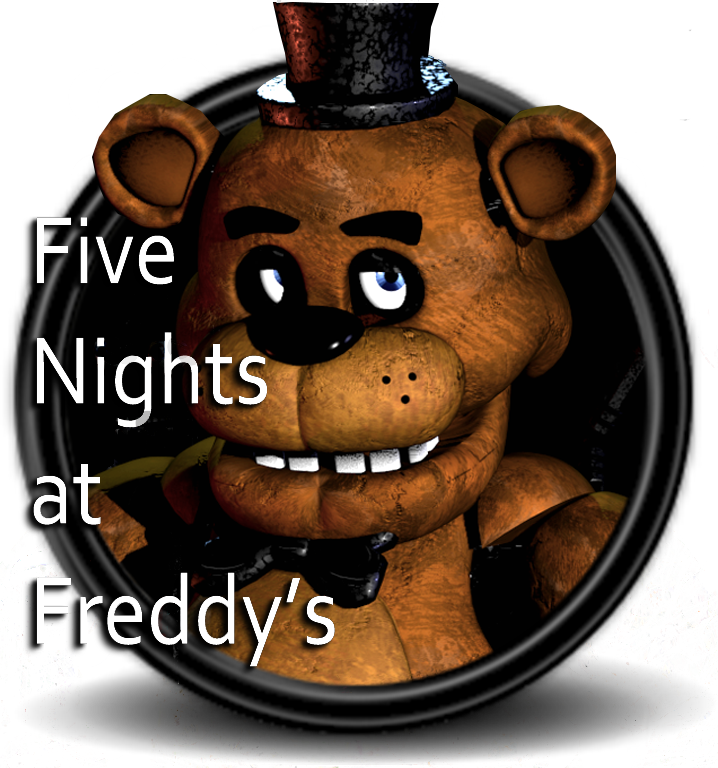
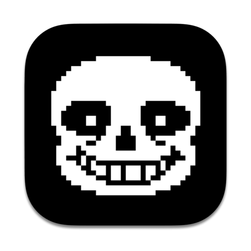

Menu
Um exemplo do menu do site. (Estou focando só no código mesmo, não quero perder tanto tempo com o visual).
Five Nights at Freddy's é uma franquia de mídia norte americana criada por Scott Cawthon.
O primeiro jogo
com o mesmo nome foi lançado em 8 de agosto de 2014, depois de seu lançamento a série se tornou um sucesso
mundial.

Hollow Knight é um jogo indie de gênero metroidvania desenvolvido e publicado pela Team Cherry, lançado para
Microsoft Windows,
macOS e Linux em 2017 e, posteriormente, para Nintendo Switch, Playstation 4 e Xbox One
em 2018.
Sobre
The Legend of Zelda é uma série de jogos eletrônicos da Nintendo criada em 1986 por Shigeru Miyamoto e Takashi
Tezuka.
É centrado em jogos eletrônicos de ação e aventura e alguns elementos de RPG.

Undertale é um RPG eletrônico criado pelo desenvolvedor independente norte-americano Toby Fox. Nele, o jogador
pode controlar uma
criança humana que caiu em uma caverna, uma região grande e isolada sob a superfície da
Terra, separada por uma barreira mágica.